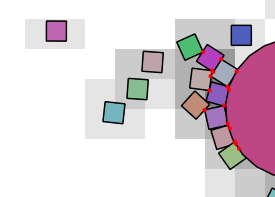
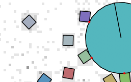
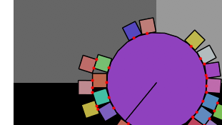

Chipmunk2D is a 2D rigid body physics library distributed under the MIT license. It is blazingly fast, portable, numerically stable, and easy to use. For this reason it has been used in hundreds of games across just about every system you can name. This includes top quality titles such as Night Sky for the Wii and many #1 sellers on the iPhone App Store! I’ve put thousands of hours of work over many years to make Chipmunk2D what it is today. If you find Chipmunk2D has saved you a lot of time, please consider donating. You’ll make an indie game developer very happy!
First of all, I would like to give a Erin Catto a big thank you, as Chipmunk2D’s impulse solver was directly inspired by his example code way back in 2006. (Now a full fledged physics engine all its own: Box2D.org). His contact persistence idea allows for stable stacks of objects with very few iterations of the solver. My previous solver produced mushy piles of objects or required a large amount of CPU to operate stably.
A lot of people ask me why I wrote Chipmunk2D in C instead of pick your favorite language here. I tend to get really excited about different programming languages. Depending on the month, take your pick of Scheme, OCaml, Ruby, Objective-C, ooc, Lua, Io… the list goes on. The one common factor between most any language is that they are usually dead simple to make bindings to C code. I also wanted Chipmunk2D to be fast, portable, easy to optimize and easy to debug. Writing Chipmunk2D in C made it simpler to achieve all of those goals.
That said, I’ve never developed a whole game in C and I probably never will. There are much more interesting and fun languages than C with all sorts of nice features like garbage collection, closures and all sorts of unique object oriented runtimes. Check out the Bindings and Ports page to see if you can use Chipmunk2D from your language of choice. Because Chipmunk2D is written in a subset of C99 it compiles cleanly as C, C++, Objective-C and Objective-C++ code, making it easy to integrate into projects in those languages.
Chipmunk does provide overloaded operators for *, , and - (unary and binary) if you are using C+, but falls back to using functions such as cpvadd() and cpvsub() for C code. This is a little harder to read, but works OK once you get used to it. Most of the interesting vector operations that are possible don’t have a symbol for them anyway (at least not on a keyboard).
Another problem for a C API is access restriction. There are many structs, fields and functions in Chipmunk that are only meant to be used internally. To work around this, I have a separate header full of Chipmunk’s private API, chipmunk_private.h. I also use a macro, CP_PRIVATE() to mangle names in public structures. While you can feel free to include this header or use the macro in your own code to access the private API, be aware that the fields and functions may be renamed or disappear without warning and I have no plans to document or support usage of the private API.
If you haven’t downloaded it yet, you can always download the newest version of Chipmunk2D here. Inside you’ll find a command line build script that works with CMake, a XCode project and project files for Visual Studio ‘09 and ‘10.
Debug mode might be slightly slower, but will include a lot of error checking assertions that can help you find bugs quicker such as removing objects twice or doing things that might cause unsolvable collisions. I highly recommend you use a debug build until you are ready to ship the game and only then switch to a release build.
The included XCode project has targets for building a static library for the Mac or iOS. Additionally, you might want to just run the xcode/iphonestatic.command or xcode/macstatic.command to build you a directory with the headers and debug/release static libraries that you can just drop right into your projects. Including Chipmunk in your project with all the correct compiler flags applied couldn’t be simpler. The iPhone script generates a “fat” library that can be used with both the iOS simulator and devices. The device version is compiled as release, and the simulator version is compiled as debug.
I rarely use MSVC, but others have chipped in to help me maintain Visual Studio project files. The MSVC 10 project should work, as I usually remember to test that before making a stable release. The MSVC 9 project may not as I don’t have access to that version. Let me know if there are any issues.
The CMake build script should work on any system (Unix/Win/Mac) as long as you have CMake installed. It can even generate XCode or MSVC projects if you want (see CMake’s documentation for more information).
To compile a Chipmunk debug build on the command line, all you need to do is run:
cmake -D CMAKE_BUILD_TYPE=Debug .
makeIf the -D CMAKE_BUILD_TYPE=Debug option is left out, it will make a release build instead.
Why CMake? Somebody was kind enough to create the build scripts for me originally, and it seems to handle a lot of the cross-platform issues nicely. I know some people really hate having to install some random non-make build system in order to compile things, but it has saved me a lot of time and effort.
Hello world Chipmunk style. Create a simple simulation where a ball falls onto a static line segment, then rolls off. Print out the coordinates of the ball.
The best way to get support is to visit the Chipmunk Forums. There are plenty of people around using Chipmunk on the just about every platform I’ve ever heard of. If you are working on a commercial project, Howling Moon Software (my company) is available for contracting. We can help with implementing custom Chipmunk behaviors, as well as priority bug fixes and performance tuning.
If you find any bugs in Chipmunk, errors or broken links in this document, or have a question or comment about Chipmunk you can contact me at slembcke(at)gmail(dot)com. (email or GTalk)
Chipmunk is licensed under the MIT license.
Copyright (c) 2007-2015 Scott Lembcke and Howling Moon Software Permission is hereby granted, free of charge, to any person obtaining a copy of this software and associated documentation files (the "Software"), to deal in the Software without restriction, including without limitation the rights to use, copy, modify, merge, publish, distribute, sublicense, and/or sell copies of the Software, and to permit persons to whom the Software is furnished to do so, subject to the following conditions: The above copyright notice and this permission notice shall be included in all copies or substantial portions of the Software. THE SOFTWARE IS PROVIDED "AS IS", WITHOUT WARRANTY OF ANY KIND, EXPRESS OR IMPLIED, INCLUDING BUT NOT LIMITED TO THE WARRANTIES OF MERCHANTABILITY, FITNESS FOR A PARTICULAR PURPOSE AND NONINFRINGEMENT. IN NO EVENT SHALL THE AUTHORS OR COPYRIGHT HOLDERS BE LIABLE FOR ANY CLAIM, DAMAGES OR OTHER LIABILITY, WHETHER IN AN ACTION OF CONTRACT, TORT OR OTHERWISE, ARISING FROM, OUT OF OR IN CONNECTION WITH THE SOFTWARE OR THE USE OR OTHER DEALINGS IN THE SOFTWARE.
This means that you do not have to buy a license or pay to use Chipmunk in commercial projects. (Though we really appreciate donations)
There are 4 basic object types you will use in Chipmunk.
There is often confusion between rigid bodies and their collision shapes in Chipmunk and how they relate to sprites. A sprite would be a visual representation of an object, while a collision shape is an invisible property that defines how objects should collide. Both the sprite’s and the collision shape’s position and rotation are controlled by the motion of a rigid body. Generally you want to create a game object type that ties these things all together.
For most of the structures you will use, Chipmunk uses a more or less standard and straightforward set of memory management functions. Take the cpSpace struct for example:
cpSpaceNew() – Allocates and initializes a cpSpace struct. It calls cpSpaceAlloc() then cpSpaceInit().cpSpaceFree(cpSpace *space) – Destroys and frees the cpSpace struct.You are responsible for freeing any structs that you allocate. Chipmunk does not do reference counting or garbage collection. If you call a new function, you must call the matching free function or you will leak memory.
Additionally if you need more control over allocation and initialization because you are allocating temporary structs on the stack, writting a language binding, or working in a low memory environment you can also use the following functions. Most people will never have any need to use these functions.
cpSpaceAlloc() – Allocates but does not initialize a cpSpace struct. All allocation functions look more or less like this: return (cpSpace *)cpcalloc(1, sizeof(cpSpace)); You can write your own allocation functions if you want. It is not a requirement that the memory be zeroed.cpSpaceInit(cpSpace *space) – Initializes a cpSpace struct.cpSpaceDestroy(cpSpace *space) – Frees all memory allocated by cpSpaceInit(), but does not free the cpSpace struct itself.Like calls to the new and free functions. Any memory allocated by an alloc function must be freed by cpfree() or similar. Any call to an init function must be matched with its destroy function.
To further ease integration with garbage collectors or other memory management constraints, Chipmunk has a number of compile time defines (cpcalloc(), cprealloc(), and cpfree()) that can be overriden. If you aren’t using Chipmunk from a garbage collected language, I’d highly recommend using libGC. It provides nearly transparent garbage collection for C based languages.
chipmunk_types.h defines a number of basic types that Chipmunk uses. These can be changed at compile time to better suit your needs:
cpFloat: Floating point type. Defaults to double.cpVect: 2D vector type. cpVect documentationcpBool: Like every good C library that wants good cross language compatibility, you end up defining your own boolean type. :-\ Defaults to int.cpDataPointer: Pointer type defined for callbacks and the user definable data pointer on most Chipmunk structs. Defaults to void*.cpCollisionType: Unique identifier for collision shape types. Defaults to unsigned int. Defined type must support the == operator.cpGroup: Unique identifier for collision groups. Defaults to unsigned int. A CP_NO_GROUP value is defined that can be used when you don’t want to specify a group. Defined type must support the equality == operator.cpBitmask: Type used for collision filter categories and masks. Defaults to unsigned int. Defined type must support the bitwise AND & operator.cpTransform: Type used for 2×3 affine transforms in Chipmunk.If you are writting a game engine or language binding on top of Chipmunk, you might want to choose to use object references instead of integers for collision type and group. I often use class pointers for collision types and game object pointers for groups. It’s much simpler than keeping a table of enumerations around.
Note: On the iPhone, cpFloat is defined as float and cpVect is an alias for CGPoint for performance and compatibility reasons.
First of all, Chipmunk uses double precision floating point numbers throughout its calculations by default. This is likely to be faster on most modern desktop processors, and means you don’t have to worry as much about floating point accuracy. You can change the floating point type used by Chipmunk when compiling the library. Look in chipmunk_types.h.
Chipmunk defines a number of aliases for common math functions so that you can choose to use floats or doubles for Chipmunk’s floating point type. In your own code, there probably isn’t a strong reason to use these aliases unless you expect you might want to change Chipmunk’s floating point type later and a 2% performance hit from using the wrong float/double version of math functions will matter.
However, there are a few unique functions you will probably find very useful:
cpFloat cpfclamp(cpFloat f, cpFloat min, cpFloat max) – Clamp f to be between min and max.cpFloat cpflerp(cpFloat f1, cpFloat f2, cpFloat t) – Linearly interpolate between f1 and f2.cpFloat cpflerpconst(cpFloat f1, cpFloat f2, cpFloat d) – Linearly interpolate from f1 towards f2 by no more than d.Floating point infinity is defined as INFINITY. This is defined by many math libraries, but is not actually part of the C standard library.
cpVecttypedef struct cpVect{
cpFloat x, y;
} cpVect2D vector packed into a struct. No surprises here.
static const cpVect cpvzero = {0.0f,0.0f};Constant for the zero vector.
cpVect cpv(const cpFloat x, const cpFloat y)Convenience constructor for creating new cpVect structs.
cpBool cpveql(const cpVect v1, const cpVect v2) – Check if two vectors are equal. Chipmunk provides an overloaded == operator when used in C++ programs. (Be careful when comparing floating point numbers!)cpVect cpvadd(const cpVect v1, const cpVect v2) – Add two vectors. Chipmunk provides an overloaded cpVect cpvsub(const cpVect v1, const cpVect v2) – Subtract two vectors. Chipmunk provides an overloaded cpVect cpvneg(const cpVect v) Negate a vector. Chipmunk provides an overloaded unary negation operator cpVect cpvmult(const cpVect v, const cpFloat s) Scalar multiplication. Chipmunk provides an overloaded * operator when used in C++ programs.cpFloat cpvdot(const cpVect v1, const cpVect v2) – Vector dot product.cpFloat cpvcross(const cpVect v1, const cpVect v2) – 2D vector cross product analog. The cross product of 2D vectors results in a 3D vector with only a z component. This function returns the value along the z-axis.cpVect cpvperp(const cpVect v) – Returns a perpendicular vector. (90 degree rotation)cpVect cpvrperp(const cpVect v) – Returns a perpendicular vector. (cpVect cpvproject(const cpVect v1, const cpVect v2) Returns the vector projection of v1 onto v2.cpVect cpvrotate(const cpVect v1, const cpVect v2) – Uses complex multiplication to rotate v1 by v2. Scaling will occur if v1 is not a unit vector.cpVect cpvunrotate(const cpVect v1, const cpVect v2) – Inverse of cpvrotate().cpFloat cpvlength(const cpVect v) – Returns the length of v.cpFloat cpvlengthsq(const cpVect v) – Returns the squared length of v. Faster than cpvlength() when you only need to compare lengths.cpVect cpvlerp(const cpVect v1, const cpVect v2, const cpFloat t) – Linearly interpolate between v1 and v2.cpVect cpvlerpconst(cpVect v1, cpVect v2, cpFloat d) – Linearly interpolate between v1 towards v2 by distance d.cpVect cpvslerp(const cpVect v1, const cpVect v2, const cpFloat t) – Spherical linearly interpolate between v1 and v2.cpVect cpvslerpconst(const cpVect v1, const cpVect v2, const cpFloat a) – Spherical linearly interpolate between v1 towards v2 by no more than angle a in radians.cpVect cpvnormalize(const cpVect v) – Returns a normalized copy of v. As a special case, it returns cpvzero when called on cpvzero.cpVect cpvclamp(const cpVect v, const cpFloat len) – Clamp v to length len.cpFloat cpvdist(const cpVect v1, const cpVect v2) – Returns the distance between v1 and v2.cpFloat cpvdistsq(const cpVect v1, const cpVect v2) – Returns the squared distance between v1 and v2. Faster than cpvdist() when you only need to compare distances.cpBool cpvnear(const cpVect v1, const cpVect v2, const cpFloat dist) – Returns true if the distance between v1 and v2 is less than dist.cpVect cpvforangle(const cpFloat a) – Returns the unit length vector for the given angle (in radians).cpFloat cpvtoangle(const cpVect v) – Returns the angular direction v is pointing in (in radians).cpBBtypedef struct cpBB{
cpFloat l, b, r ,t;
} cpBBSimple bounding box struct. Stored as left, bottom, right, top values.
cpBB cpBBNew(const cpFloat l, const cpFloat b, const cpFloat r, const cpFloat t)Convenience constructor for cpBB structs. Like cpv() this function returns a copy and not a malloced pointer.
cpBB cpBBNewForExtents(const cpVect c, const cpFloat hw, const cpFloat hh)Convenience constructor for making a cpBB fitting with a center point and half width and height.
cpBB cpBBNewForCircle(const cpVect p, const cpFloat r)Convenience constructor for making a cpBB fitting a circle at position p with radius r.
cpBool cpBBIntersects(const cpBB a, const cpBB b) – Returns true if the bounding boxes intersect.cpBool cpBBContainsBB(const cpBB bb, const cpBB other) – Returns true if bb completely contains other.cpBool cpBBContainsVect(const cpBB bb, const cpVect v) – Returns true if bb contains v.cpBB cpBBMerge(const cpBB a, const cpBB b) – Return the minimal bounding box that contains both a and b.cpBB cpBBExpand(const cpBB bb, const cpVect v) – Return the minimal bounding box that contains both bb and v.cpVect cpBBCenter(const cpBB bb) – Return the center of bb.cpFloat cpBBArea(cpBB bb) – Return the area of bb.cpFloat cpBBMergedArea(cpBB a, cpBB b) – Merges a and b then returns the area of the merged bounding box.cpFloat cpBBSegmentQuery(cpBB bb, cpVect a, cpVect b) – Returns the fraction along the segment query the cpBB is hit. Returns INFINITY if it doesn’t hit.cpBool cpBBIntersectsSegment(cpBB bb, cpVect a, cpVect b) – Returns true if the segment defined by endpoints a and b intersect bb.cpVect cpBBClampVect(const cpBB bb, const cpVect v) – Returns a copy of v clamped to the bounding box.cpVect cpBBWrapVect(const cpBB bb, const cpVect v) – Returns a copy of v wrapped to the bounding box.cpBodyChipmunk supports three different types of bodies with unique behavioral and performance characteristics.
Dynamic bodies are the default body type. They react to collisions, are affected by forces and gravity, and have a finite amount of mass. These are the type of bodies that you want the physics engine to simulate for you. Dynamic bodies interact with all types of bodies and can generate collision callbacks.
Kinematic bodies are bodies that are controlled from your code instead of inside the physics engine. They arent affected by gravity and they have an infinite amount of mass so they don’t react to collisions or forces with other bodies. Kinematic bodies are controlled by setting their velocity, which will cause them to move. Good examples of kinematic bodies might include things like moving platforms. Objects that are touching or jointed to a kinematic body are never allowed to fall asleep.
Static bodies are bodies that never (or rarely) move. Using static bodies for things like terrain offers a big performance boost over other body types- because Chipmunk doesn’t need to check for collisions between static objects and it never needs to update their collision information. Additionally, because static bodies don’t move, Chipmunk knows it’s safe to let objects that are touching or jointed to them fall asleep. Generally all of your level geometry will be attached to a static body except for things like moving platforms or doors. Every space provide a built-in static body for your convenience. Static bodies can be moved, but there is a performance penalty as the collision information is recalculated. There is no penalty for having multiple static bodies, and it can be useful for simplifying your code by allowing different parts of your static geometry to be initialized or moved separately.
A graphics engine only needs to know the position of an object for each frame that its drawn. For a physics engine, this isn’t enough information to calculate a collision response. When you set the position of a body, you are effectively asking it to teleport itself. This means that it will instantly move to its new position instead of moving through space and time like a normal object. If you teleport an object so that it overlaps another one, the best the physics engine can do is to attempt to push the objects apart again since there is no information about their movement. This generally results in very mushy looking collisions. So instead of setting the position of an object, it’s better to set its velocity and allow the physics engine to update the position. That way it can resolve any resulting colisions natuarally since it knows how the objects were moving. This is why kinematic bodies work the way they do. You set the velocity, and the physics updates their position so the two are never out of sync.
For dynamic bodies, setting the velocity explicitly every frame can cause problems. For example, a problem occurs when a light dynamic body (like a person) is pressed against a heavy dynamic body (like a car), and you set velocity of the small object so that it’s pushing it into the big body. To the physics engine, the change in velocity is the same as applying a large impulse (a very short, very large force). Even if the velocity is low, the large force can allow the small body to push the big body, even when it normally wouldn’t be able to. For example, a person walking into a car can overpower the car’s friction and cause it to creep along the ground slowly. Additionally, when you set the velocity of an object that is already in contact, it can cause the two objects to overlap by a small amount. The easiest way to avoid both of these problems is to make smaller changes to the body’s velocity, accelerating it over a fraction of a second instead of a single frame. An even better solution, which is covered more thoroughly later, is to use constraints to move the object.
cpBody *cpBodyAlloc(void)
cpBody *cpBodyInit(cpBody *body, cpFloat m, cpFloat i)
cpBody *cpBodyNew(cpFloat m, cpFloat i)
cpBody *cpBodyInitKinematic(cpBody *body)
cpBody *cpBodyNewKinematic()
cpBody *cpBodyInitStatic(cpBody *body)
cpBody *cpBodyNewStatic()
void cpBodyDestroy(cpBody *body)
void cpBodyFree(cpBody *body)Standard set of Chipmunk memory management functions. m and i are the mass and moment of inertia for the body. Guessing the mass for a body is usually fine, but guessing a moment of inertia can lead to a very poor simulation so it’s recommended to use Chipmunk’s moment calculations to estimate the moment for you. Be careful not to free a body before any shapes or constraints attached to it have been removed from a space.
There are two ways to set up a dynamic body. The easiest option is to create a body with a mass and moment of 0, and set the mass or density of each collision shape added to the body. Chipmunk will automatically calculate the mass, moment of inertia, and center of gravity for you. This is probably preferred in most cases.
TODO example
The other option is to set the mass of the body when it’s created, and leave the mass of the shapes added to it as 0.0. This approach is more flexible, but is not as easy to use. Don’t set the mass of both the body and the shapes. If you do so, it will recalculate and overwite your custom mass value when the shapes are added to the body.
TODO example
Chipmunk provides getter/setter functions for a number of properties on rigid bodies. Setting most properties automatically wakes the rigid bodies up if they were sleeping. You can also set the fields directly on the cpBody struct if you wish. They are documented in the headers.
cpBodyType cpBodyGetType(const cpBody *body)
void cpBodySetType(cpBody *body, cpBodyType)Set the type of a body (dynamic, kinematic, static). See the section on BodyTypes for more information. When changing an body to a dynamic body, the mass and moment of inertia are recalculated from the shapes added to the body. Custom calculated moments of inertia are not preseved when changing types. This function cannot be called directly in a collision callback. See Post-Step Callbacks for more information.
cpSpace cpBodyGetSpace(const cpBody *body)The cpSpace this body is currently added to, or NULL if it is not currently added to a space.
cpFloat cpBodyGetMass(const cpBody *body)
void cpBodySetMass(cpBody *body, cpFloat m)Mass of the body.
cpFloat cpBodyGetMoment(const cpBody *body)
void cpBodySetMoment(cpBody *body, cpFloat i)Moment of inertia (MoI or sometimes just moment) of the body. The moment is like the rotational mass of a body. See below for function to help calculate the moment.
cpVect cpBodyGetPosition(const cpBody *body)
void cpBodySetPosition(cpBody *body, cpVect pos)Position of the body. When changing the position you may also want to call cpSpaceReindexShapesForBody() to update the collision detection information for the attached shapes if plan to make any queries against the space.
cpVect cpBodyGetCenterOfGravity(const cpBody *body)
void cpBodySetCenterOfGravity(cpBody *body, cpVect cog)Location of the center of gravity in body local coordinates. The default value is (0, 0), meaning the center of gravity is the same as the position of the body.
cpVect cpBodyGetVelocity(const cpBody *body)
void cpBodySetVelocity(cpBody *body, const cpVect value)Linear velocity of the center of gravity of the body.
cpVect cpBodyGetForce(const cpBody *body)
void cpBodySetForce(cpBody *body, const cpVect value)Force applied to the center of gravity of the body. This value is reset for every time step.
cpFloat cpBodyGetAngle(const cpBody *body)
void cpBodySetAngle(cpBody *body, cpFloat a)Rotation of the body in radians. When changing the rotation you may also want to call cpSpaceReindexShapesForBody() to update the collision detection information for the attached shapes if plan to make any queries against the space. A body rotates around its center of gravity, not its position.
cpFloat cpBodyGetAngularVelocity(const cpBody *body)
void cpBodySetAngularVelocity(cpBody *body, const cpFloat value)The angular velocity of the body in radians per second.
cpFloat cpBodyGetTorque(const cpBody *body)
void cpBodySetTorque(cpBody *body, const cpFloat value)The torque applied to the body. This value is reset for every time step.
cpVect cpBodyGetRotation(const cpBody *body)The rotation vector for the body. Can be used with cpvrotate() or cpvunrotate() to perform fast rotations.
cpSpace* cpBodyGetSpace(const cpBody *body)Get the cpSpace that body has been added to.
cpDataPointer cpBodyGetUserData(const cpBody *body)
void cpBodySetUserData(cpBody *body, const cpDataPointer value)User data pointer. Use this pointer to get a reference to the game object that owns this body from callbacks.
Use the following functions to approximate the moment of inertia for your body, adding the results together if you want to use more than one.
cpFloat cpMomentForCircle(cpFloat m, cpFloat r1, cpFloat r2, cpVect offset) – Calculate the moment of inertia for a hollow circle, r1 and r2 are the inner and outer diameters in no particular order. (A solid circle has an inner diameter of 0)cpFloat cpMomentForSegment(cpFloat m, cpVect a, cpVect b, cpFloat radius) – Calculate the moment of inertia for a line segment. The endpoints a and b are relative to the body.cpFloat cpMomentForPoly(cpFloat m, int count, const cpVect *verts, cpVect offset, cpFloat radius) – Calculate the moment of inertia for a solid polygon shape assuming its center of gravity is at its centroid. The offset is added to each vertex.cpFloat cpMomentForBox(cpFloat m, cpFloat width, cpFloat height) – Calculate the moment of inertia for a solid box centered on the body.TODO poly examples—>
Use the following functions to get the area for common Chipmunk shapes if you want to approximate masses or density or whatnot.
cpFloat cpAreaForCircle(cpFloat r1, cpFloat r2) – Area of a hollow circle.cpFloat cpAreaForSegment(cpVect a, cpVect b, cpFloat r) – Area of a beveled segment. (Will always be zero if radius is zero)cpFloat cpAreaForPoly(const int count, const cpVect *verts, cpFloat radius) – Signed area of a polygon shape. Returns a negative number for polygons with a clockwise winding.Many things are defined in coordinates local to a body meaning that the (0,0) is at the center of gravity of the body and the axis rotate along with the body.
cpVect cpBodyLocalToWorld(const cpBody *body, const cpVect v) – Convert from body local coordinates to world space coordinates.cpVect cpBodyWorldToLocal(const cpBody *body, const cpVect v) – Convert from world space coordinates to body local coordinates.It’s often useful to know the absolute velocity of a point on the surface of a body since the angular velocity affects everything except the center of gravity.
cpVect cpBodyVelocityAtWorldPoint(const cpBody *body, const point) – Get the absolute velocity of the rigid body at the given world point point.cpVect cpBodyVelocityAtLocalPoint(const cpBody *body, const point) – Get the absolute velocity of the rigid body at the given body local point point.People are sometimes confused by the difference between a force and an impulse. An impulse is a very large force applied over a very short period of time. Some examples are a ball hitting a wall or cannon firing. Chipmunk treats impulses as if they occur instantaneously by adding directly to the velocity of an object. Both impulses and forces are affected the mass of an object. Doubling the mass of the object will halve the effect.
void cpBodyApplyForceAtWorldPoint(cpBody *body, const cpVect force, const cpVect point) – Add the force force to body as if applied from the world point point.void cpBodyApplyForceAtLocalPoint(cpBody *body, const cpVect force, const cpVect point) – Add the local force force to body as if applied from the body local point point.void cpBodyApplyImpulseAtWorldPoint(cpBody *body, const cpVect impulse, const cpVect point) – Add the impulse impulse to body as if applied from the world point point.void cpBodyApplyImpulseAtLocalPoint(cpBody *body, const cpVect impulse, const cpVect point) – Add the local impulse impulse to body as if applied from the body local point point.Chipmunk supports a sleeping feature which improves performance by not simulating groups of objects that aren’t moving. Read more about it in the cpSpace section.
cpBool cpBodyIsSleeping(const cpBody *body) – Returns true if body is sleeping.void cpBodyActivate(cpBody *body) – Reset the idle timer on a body. If it was sleeping, wake it and any other bodies it was touching.void cpBodySleep(cpBody *body) – Forces a body to fall asleep immediately even if it’s in midair. Cannot be called from a callback.void cpBodyActivateStatic(cpBody *body, cpShape *filter) – Similar in function to cpBodyActivate(). Activates all bodies touching body. If filter is not NULL, then only bodies touching through filter will be awoken.void cpBodySleepWithGroup(cpBody *body, cpBody *group)When objects in Chipmunk sleep, they sleep as a group of all objects that are touching or jointed together. When an object is woken up, all of the objects in its group are woken up. cpBodySleepWithGroup() allows you group sleeping objects together. It acts identically to cpBodySleep() if you pass NULL as group by starting a new group. If you pass a sleeping body for group, body will be awoken when group is awoken. You can use this to initialize levels and start stacks of objects in a pre-sleeping state.
typedef void (*cpBodyShapeIteratorFunc)(cpBody *body, cpShape *shape, void *data)
void cpBodyEachShape(cpBody *body, cpBodyShapeIteratorFunc func, void *data)Call func once for each shape that is attached to body and added to a space. data is passed along as a context value. It is safe to remove shapes using these callbacks.
typedef void (*cpBodyConstraintIteratorFunc)(cpBody *body, cpConstraint *constraint, void *data)
void cpBodyEachConstraint(cpBody *body, cpBodyConstraintIteratorFunc func, void *data)Call func once for each constraint that is attached to body and added to a space. data is passed along as a context value. It is safe to remove constraints using thes callbacks.
typedef void (*cpBodyArbiterIteratorFunc)(cpBody *body, cpArbiter *arbiter, void *data)
void cpBodyEachArbiter(cpBody *body, cpBodyArbiterIteratorFunc func, void *data)This one is more interesting. Calls func once for each collision pair that body is involved in. Calling cpArbiterGetBodies|Shapes will return the body or shape for body as the first argument. You can use this to check all sorts of collision information for a body like if it’s touching the ground, another particular object, how much collision force is being applied to an object, etc. Sensor shapes and arbiters that have been rejected by a collision handler callback or cpArbiterIgnore() are not tracked by the contact graph.
Note: If your compiler supports blocks (such as Clang), there are an alternate set of functions you can call. cpBodyEachShape_b(), etc. See chipmunk.h for more information.
This section is a stub. For now you can look at the Planet demo for an example of how to use integration callbacks to implement planetary gravity.
TODO document and examples—>
cpShapeThere are currently 3 collision shape types:
You can add as many shapes to a body as you wish. That is why the two types are separate. Combining multiple shapes gives you the flexibility to make any object you want as well as providing different areas of the same object with different friction, elasticity or callback values.
When creating different types of shapes, you will always be given a cpShape* pointer back. This is because Chipmunk shapes are meant to be opaque types. Think of the specific collision types such as cpCircleShape, cpSegmentShape and cpPolyShape as private subclasses of cpShape. You can still read some properties from them using the getter functions, but you are not intended to cast cpShape pointers to their specific types.
Chipmunk provides getter/setter functions for a number of properties on collision shapes. Setting most properties will automatically wake the attached rigid body, if it’s sleeping. You can also set some of the fields directly on the cpShape struct if you wish. They are documented in the headers.
cpBody * cpShapeGetBody(const cpShape *shape)
void cpShapeSetBody(cpShape *shape, cpBody *body)The rigid body the shape is attached to. Can only be set when the shape is not added to a space.
cpBB cpShapeGetBB(const cpShape *shape)The bounding box of the shape. Only guaranteed to be valid after cpShapeCacheBB() or cpSpaceStep() is called. Moving a body that a shape is connected to does not update its bounding box. For shapes used for queries that aren’t attached to bodies, you can also use cpShapeUpdate().
cpBool cpShapeGetSensor(const cpShape *shape)
void cpShapeSetSensor(cpShape *shape, cpBool value)A boolean value if this shape is a sensor or not. Sensors only call collision callbacks, and never generate real collisions.
cpFloat cpShapeGetElasticity(const cpShape *shape)
void cpShapeSetElasticity(cpShape *shape, cpFloat value)Elasticity of the shape. A value of 0.0 gives no bounce, while a value of 1.0 will give a “perfect” bounce. However due to inaccuracies in the simulation using 1.0 or greater is not recommended however. The elasticity for a collision is found by multiplying the elasticity of the individual shapes together.
cpFloat cpShapeGetFriction(const cpShape *shape)
void cpShapeSetFriction(cpShape *shape, cpFloat value)Friction coefficient. Chipmunk uses the Coulomb friction model, a value of 0.0 is frictionless. The friction for a collision is found by multiplying the friction of the individual shapes together. Tables of friction coefficients.
cpVect cpShapeGetSurfaceVelocity(const cpShape *shape)
void cpShapeSetSurfaceVelocity(cpShape *shape, cpVect value)The surface velocity of the object. Useful for creating conveyor belts or players that move around. This value is only used when calculating friction, not resolving the collision.
cpCollisionType cpShapeGetCollisionType(const cpShape *shape)
void cpShapeSetCollisionType(cpShape *shape, cpCollisionType value)You can assign types to Chipmunk collision shapes that trigger callbacks when objects of certain types touch. See the callbacks section for more information.
cpShapeFilter cpShapeGetFilter(const cpShape *shape)
void cpShapeSetFilter(cpShape *shape, cpShapeFilter filter)Set the collision filter for this shape. See Filtering Collisions for more information.
cpSpace* cpShapeGetSpace(const cpShape *shape)Get the cpSpace that shape has been added to.
cpDataPointer cpShapeGetUserData(const cpShape *shape)
void cpShapeSetUserData(cpShape *shape, cpDataPointer value)A user definable data pointer. If you set this to point at the game object the shapes is for, then you can access your game object from Chipmunk callbacks.
Chipmunk has two primary means of ignoring collisions: groups and category masks.
Groups are used to ignore collisions between parts on a complex object. A ragdoll is a good example. When jointing an arm onto the torso, you’ll want them to allow them to overlap. Groups allow you to do exactly that. Shapes that have the same group don’t generate collisions. So by placing all of the shapes in a ragdoll in the same group, you’ll prevent it from colliding against other parts of itself. Category masks allow you to mark which categories an object belongs to and which categories it collidies with.
For example, a game has four collision categories: player (0), enemy (1), player bullet (2), and enemy bullet (3). Neither players nor enemies should not collide with their own bullets, and bullets should not collide with other bullets. However, players collide with enemy bullets, and enemies collide with player bullets.
| Object | Object Category | Category Mask |
| “Player” | 1 | 4, 5 |
| “Enemy” | 2 | 2, 3, 5 |
| “Player Bullet” | 3 | 1, 5 |
| “Enemy Bullet” | 4 | 2, 5 |
| “Walls” | 5 | 1, 2, 3, 4 |
Note that everything in this example collides with walls. Additionally, the enemies collide with eachother.
By default, objects exist in every category and collide with every category.
Objects can fall into multiple categories. For instance, you might have a category for a red team, and have a red player bullet. In the above example, each object only has one category. If you make use of multiple categories on an object, you may also wish to consider replacing the cpShapeFilter struct and the cpShapeFilterReject() function in chipmunk_private.h to customize it to better suit your game’s needs.
The default type of categories and mask in cpShapeFilter is unsigned int which has a resolution of 32 bits on most systems. You can redefine cpBitmask in chipmunk_types.h if you need more bits to work with.
There is one last way of filtering collisions using collision handlers. See the section on callbacks for more information. Collision handlers can be more flexible, but can be slower. Fast collision filtering rejects collisions before running the expensive collision detection code, so using groups or category masks is preferred.
void cpShapeDestroy(cpShape *shape)
void cpShapeFree(cpShape *shape)Destroy and Free functions are shared by all shape types. Allocation and initialization functions are specific to each shape type. See below.
cpBB cpShapeCacheBB(cpShape *shape) – Synchronizes shape with the body its attached to.cpBB cpShapeUpdate(cpShape *shape, cpVect pos, cpVect rot) – Sets the position and rotation of the shape tocpCircleShape *cpCircleShapeAlloc(void)
cpCircleShape *cpCircleShapeInit(cpCircleShape *circle, cpBody *body, cpFloat radius, cpVect offset)
cpShape *cpCircleShapeNew(cpBody *body, cpFloat radius, cpVect offset)body is the body to attach the circle to, offset is the offset from the body’s center of gravity in body local coordinates.
cpVect cpCircleShapeGetOffset(cpShape *circleShape)
cpFloat cpCircleShapeGetRadius(cpShape *circleShape)Getters for circle shape properties. Passing as non-circle shape will throw an assertion.
cpSegmentShape* cpSegmentShapeAlloc(void)
cpSegmentShape* cpSegmentShapeInit(cpSegmentShape *seg, cpBody *body, cpVect a, cpVect b, cpFloat radius)
cpShape* cpSegmentShapeNew(cpBody *body, cpVect a, cpVect b, cpFloat radius)body is the body to attach the segment to, a and b are the endpoints, and radius is the thickness of the segment.
cpVect cpSegmentShapeGetA(cpShape *shape)
cpVect cpSegmentShapeGetB(cpShape *shape)
cpVect cpSegmentShapeGetNormal(cpShape *shape)
cpFloat cpSegmentShapeGetRadius(cpShape *shape)Getters for segment shape properties. Passing a non-segment shape will throw an assertion.
void cpSegmentShapeSetNeighbors(cpShape *shape, cpVect prev, cpVect next)When you have a number of segment shapes that are all joined together, things can still collide with the “cracks” between the segments. By setting the neighbor segment endpoints you can tell Chipmunk to avoid colliding with the inner parts of the crack.
cpPolyShape *cpPolyShapeAlloc(void)
cpPolyShape *cpPolyShapeInit(cpPolyShape *poly, cpBody *body, int count, const cpVect *verts, cpTransform transform, cpFloat radius)
cpShape *cpPolyShapeNew(cpBody *body, int numVerts, cpVect *verts, cpTransform transform, cpFloat radius)body is the body to attach the poly to, verts is an array of cpVect structs, transform will be applied to every vertex. A convex hull will be calculated from the vertexes automatically.
The polygon shape will be created with a radius, increasing the size of the shape.
cpPolyShape* cpPolyShapeInitRaw(cpPolyShape *poly, cpBody *body, int count, const cpVect *verts, cpFloat radius)
cpShape* cpPolyShapeNewRaw(cpBody *body, int count, const cpVect *verts, cpFloat radius)Alternate constructors for poly shapes. This version does not apply a transform nor does it create a convex hull. Verticies must be provided with a counter-clockwise winding.
int cpPolyShapeGetNumVerts(cpShape *shape)
cpVect cpPolyShapeGetVert(cpShape *shape, int index)
cpFloat cpPolyShapeGetRadius()Getters for poly shape properties. Passing a non-poly shape or an index that does not exist will throw an assertion.
Because boxes are so common in physics games, Chipmunk provides shortcuts to create box shaped polygons. The boxes will always be centered at the center of gravity of the body you are attaching them to. Adding a small radius will bevel the corners and can significantly reduce problems where the box gets stuck on seams in your geometry. If you want to create an off-center box, you will need to use cpPolyShapeNew() or cpPolyShapeInit().
cpPolyShape *cpBoxShapeInit(cpPolyShape *poly, cpBody *body, cpFloat width, cpFloat height, cpFloat radius)
cpPolyShape *cpBoxShapeInit2(cpPolyShape *poly, cpBody *body, cpBB box, cpFloat radius)
cpShape *cpBoxShapeNew(cpBody *body, cpFloat width, cpFloat height, cpFloat radius)
cpShape *cpBoxShapeNew2(cpBody *body, cpBB box, cpFloat radius)cpVect cpCentroidForPoly(const int count, const cpVect *verts) – Calculate the centroid for a polygon.int cpConvexHull(int count, cpVect *verts, cpVect *result, int *first, cpFloat tol)Calculate the convex hull of a given set of points. Returns the count of points in the hull. result must be a pointer to a cpVect array with at least count elements. If result is NULL, then verts array wil be reduced instead. first is an optional pointer to an integer to store where the first vertex in the hull came from (i.e. verts[first] == result[0]) tol is the allowed amount to shrink the hull when simplifying it. A tolerance of 0.0 creates an exact hull.
#define CP_CONVEX_HULL(inputCount, inputVerts, outputCount_varName, outputVerts_varName)Convenience macro for using cpConvexHull(). Creates an array on the stack using alloca() and then calls cpConvexHull(). Because the output array is created on the stack it doesn’t need to be freed.
The short answer is that you can’t because the changes would be only picked up as a change to the position of the shape’s surface, but not its velocity. The long answer is that you can using the “unsafe” API as long as you realize that doing so will result in unrealistic physical behavior. These extra functions are defined in a separate header chipmunk_unsafe.h.
cpSpaceSpaces in Chipmunk are the basic unit of simulation. You add rigid bodies, shapes, and constraints to the space and then step them all forward through time together.
Chipmunk uses an iterative solver to figure out the forces between objects in the space. What this means is that it builds a big list of all of the collisions, joints, and other constraints between the bodies and makes several passes over the list considering each one individually. The number of passes it makes is the iteration count, and each iteration makes the solution more accurate. If you use too many iterations, the physics should look nice and solid, but may use up too much CPU time. If you use too few iterations, the simulation may seem mushy or bouncy when the objects should be solid. Setting the number of iterations lets you balance between CPU usage and the accuracy of the physics. Chipmunk’s default of 10 iterations is sufficient for most simple games.
Spaces can disable entire groups of objects that have stopped moving to save CPU time and battery life. In order to use this feature you must do two things. You must enable sleeping explicitly by choosing a time threshold value for cpSpace.sleepTimeThreshold. This threshold is the amount of time something must be idle before it falls asleep. cpSpace.idleSpeedThreshold defines what is considered idle. If you do not set cpSpace.idleSpeedThreshold explicitly, a value will be chosen automatically based on the current amount of gravity. Be mindful that objects cannot fall asleep if they are touching or jointed to a kinematic body.
int cpSpaceGetIterations(const cpSpace *space)
void cpSpaceSetIterations(cpSpace *space, int value)Iterations allow you to control the accuracy of the solver. Defaults to 10. See above for more information.
cpVect cpSpaceGetGravity(const cpSpace *space)
void cpSpaceSetGravity(cpSpace *space, cpVect value)Global gravity applied to the space. Defaults to cpvzero. Can be overridden on a per body basis by writing custom integration functions. Changing the gravity will activate all sleeping bodies in the space.
cpFloat cpSpaceGetDamping(const cpSpace *space)
void cpSpaceSetDamping(cpSpace *space, cpFloat value)Amount of simple damping to apply to the space. A value of 0.9 means that each body will lose 10% of its velocity per second. Defaults to 1. Like gravity, it can be overridden on a per body basis.
cpFloat cpSpaceGetIdleSpeedThreshold(const cpSpace *space)
void cpSpaceSetIdleSpeedThreshold(cpSpace *space, cpFloat value)Speed threshold for a body to be considered idle. The default value of 0 means the space estimates a good threshold based on gravity.
cpFloat cpSpaceGetSleepTimeThreshold(const cpSpace *space)
void cpSpaceSetSleepTimeThreshold(cpSpace *space, cpFloat value)Time a group of bodies must remain idle in order to fall asleep. The default value of INFINITY disables the sleeping feature.
cpFloat cpSpaceGetCollisionSlop(const cpSpace *space)
void cpSpaceSetCollisionSlop(cpSpace *space, cpFloat value)Amount of overlap between shapes that is allowed. To improve stability, set this as high as you can without noticable overlapping. It defaults to 0.1.
cpFloat cpSpaceGetCollisionBias(const cpSpace *space)
void cpSpaceSetCollisionBias(cpSpace *space, cpFloat value)Chipmunk allows fast moving objects to overlap, then fixes the overlap over time. Overlapping objects are unavoidable even if swept collisions are supported, and this is an efficient and stable way to deal with overlapping objects. The bias value controls what percentage of overlap remains unfixed after a second and defaults to ~0.2%. Valid values are in the range from 0 to 1, but using 0 is not recommended for stability reasons. The default value is calculated as cpfpow(1.0f - 0.1f, 60.0f) meaning that Chipmunk attempts to correct 10% of error ever 1/60th of a second. Note: Very very few games will need to change this value.
cpTimestamp cpSpaceGetCollisionPersistence(const cpSpace *space)
void cpSpaceSetCollisionPersistence(cpSpace *space, cpTimestamp value)The number of frames the space keeps collision solutions around for. Helps prevent jittering contacts from getting worse. This defaults to 3 and very very very few games will need to change this value.
cpFloat cpSpaceGetCurrentTimeStep(const cpSpace *space)Retrieves the current (if you are in a callback from cpSpaceStep()) or most recent (outside of a cpSpaceStep() call) timestep.
cpFloat cpSpaceIsLocked(const cpSpace *space)Returns true when you cannot add/remove objects from the space. In particular, spaces are locked when in a collision callback. Instead, run your code in a post-step callback instead.
cpDataPointer cpSpaceGetUserData(const cpSpace *space)
void cpSpaceSetUserData(cpSpace *space, cpDataPointer value)A user definable data pointer. It is often useful to point this at the gamestate object or scene management object that owns the space.
cpBody * cpSpaceGetStaticBody(const cpSpace *space)A dedicated static body for the space. You don’t have to use it, but because its memory is managed automatically with the space its very convenient. You can set its user data pointer to something helpful if you want for callbacks.
cpSpace* cpSpaceAlloc(void)
cpSpace* cpSpaceInit(cpSpace *space)
cpSpace* cpSpaceNew()
void cpSpaceDestroy(cpSpace *space)
void cpSpaceFree(cpSpace *space)More standard Chipmunk memory functions.
cpShape *cpSpaceAddShape(cpSpace *space, cpShape *shape)
cpBody *cpSpaceAddBody(cpSpace *space, cpBody *body)
cpConstraint *cpSpaceAddConstraint(cpSpace *space, cpConstraint *constraint)
void cpSpaceRemoveShape(cpSpace *space, cpShape *shape)
void cpSpaceRemoveBody(cpSpace *space, cpBody *body)
void cpSpaceRemoveConstraint(cpSpace *space, cpConstraint *constraint)
cpBool cpSpaceContainsShape(cpSpace *space, cpShape *shape)
cpBool cpSpaceContainsBody(cpSpace *space, cpBody *body)
cpBool cpSpaceContainsConstraint(cpSpace *space, cpConstraint *constraint)These functions add and remove shapes, bodies and constraints from space. The add/remove functions cannot be called from within a callback other than a postStep() callback (which is different than a postSolve() callback!). Attempting to add or remove objects from the space while cpSpaceStep() is still executing will throw an assertion. See the callbacks section for more information. The add functions return the thing being added so that you can create and add something in one line. Be careful not to free bodies before removing shapes and constraints attached to them or you will cause crashes.. The contains functions allow you to check if an object has been added to the space or not.
Occasionally, you might want to update the collision detection data for a shape. If you move a static shape or a static body you must do this to let Chipmunk know it needs to have its collision detection data updated. You may also want to manually update the collision data for normal shapes if you move them and still want to perform queries against them before the next call to cpSpaceStep().
void cpSpaceReindexShape(cpSpace *space, cpShape *shape) – Reindex a specific shape.void cpSpaceReindexShapesForBody(cpSpace *space, cpBody *body) – Reindex all the shapes for a certain body.void cpSpaceReindexStatic(cpSpace *space) – Reindex all static shapes. Generally updating only the shapes that changed is faster.typedef void (*cpSpaceBodyIteratorFunc)(cpBody *body, void *data)
void cpSpaceEachBody(cpSpace *space, cpSpaceBodyIteratorFunc func, void *data)Call func for each body in the space also passing along your data pointer. Sleeping bodies are included, but static and kinematic bodies are not as they aren’t added to the space.
typedef void (*cpSpaceShapeIteratorFunc)(cpShape *shape, void *data)
void cpSpaceEachShape(cpSpace *space, cpSpaceShapeIteratorFunc func, void *data)Call func for each shape in the space also passing along your data pointer. Sleeping and static shapes are included.
typedef void (*cpSpaceConstraintIteratorFunc)(cpConstraint *constraint, void *data)
void cpSpaceEachConstraint(cpSpace *space, cpSpaceConstraintIteratorFunc func, void *data)Call func for each constraint in the space also passing along your data pointer.
Note: If your compiler supports blocks (such as Clang), there are an alternate set of functions you can call. cpSpaceEachBody_b(), etc. See chipmunk.h for more information.
void cpSpaceStep(cpSpace *space, cpFloat dt)Update the space for the given time step. Using a fixed time step is highly recommended. Doing so can greatly increase the quality of the simulation. The easiest way to do constant timesteps is to simple step forward by 1/60th of a second (or whatever your target framerate is) for each frame regardless of how long it took to render. This works fine for many games, but a better way to do it is to separate your physics timestep and rendering. This is a good article on how to do that.
Chipmunk officially supports two spatial indexes. The default is an axis-aligned bounding box tree inspired by the one used in the Bullet Physics library, but caching of overlapping leaves was added to give it very good temporal coherence. The tree requires no tuning, and most games will find that they get the best performance using from the tree. The other available spatial index type available is a spatial hash, which can be much faster when you have a very large number (1000s) of objects that are all the same size. For smaller numbers of objects, or objects that vary a lot in size, the spatial hash is usually much slower. It also requires tuning (usually through experimentation) to get the best possible performance.
void cpSpaceUseSpatialHash(cpSpace *space, cpFloat dim, int count)Switch the space to use a spatial hash instead of the bounding box tree.
The spatial hash data is fairly size sensitive. dim is the size of the hash cells. Setting dim to the average collision shape size is likely to give the best performance. Setting dim too small will cause the shape to be inserted into many cells, setting it too low will cause too many objects into the same hash slot.
count is the suggested minimum number of cells in the hash table. If there are too few cells, the spatial hash will return many false positives. Too many cells will be hard on the cache and waste memory. the Setting count to ~10x the number of objects in the space is probably a good starting point. Tune from there if necessary.
Using the spatial has visualization in the demo program you can see what I mean. The grey squares represent cells in the spatial hash. The darker the cell, the more objects have been mapped into that cell. A good dim size is when your objects fit nicely into the grid:

Notice the light grey meaning that each cell doesn’t have too many objects mapped onto it.
When you use too small a size, Chipmunk has to insert each object into a lot of cells. This can get expensive.

Notice that the grey cells are very small compared to the collision shapes.
When you use too big of a size, a lot of shapes will fit into each cell. Each shape has to be checked against every other shape in the cell, so this makes for a lot of unnecessary collision checks.

Notice the dark grey cells meaning that many objects are mapped onto them.
Chipmunk also has an experimental single axis sort and sweep implementation. It can be very efficient on mobile games if your world is very long and flat like a racing game. See the code for cpSpaceUseSpatialHash() if you want to try enabling it.
cpConstraintA constraint is something that describes how two bodies interact with each other. (how they constrain each other) Constraints can be simple joints that allow bodies to pivot around each other like the bones in your body, or they can be more abstract like the gear joint or motors.
Constraints in Chipmunk are all velocity based constraints. This means that they act primarily by synchronizing the velocity of two bodies. A pivot joint holds two anchor points on two separate bodies together by defining equations that say that the velocity of the anchor points must be the same and calculating impulses to apply to the bodies to try and keep it that way. A constraint takes a velocity as it’s primary input and produces a velocity change as its output. Some constraints, (joints in particular) apply velocity changes to correct differences in positions. More about this in the next section.
A spring connected between two bodies is not a constraint. It’s very constraint-like as it creates forces that affect the velocities of the two bodies, but a spring takes distances as input and produces forces as its output. If a spring is not a constraint, then why do I have two varieties of spring constraints you ask? The reason is because they are damped springs. The damping associated with the spring is a true constraint that creates velocity changes based on the relative velocities of the two bodies it links. As it is convenient to put a damper and a spring together most of the time, I figured I might as well just apply the spring force as part of the constraint instead of having a damper constraint and having the user calculate and apply their own spring forces separately.
cpBody * cpConstraintGetA(const cpConstraint *constraint)
cpBody * cpConstraintGetB(const cpConstraint *constraint)Getters for the two bodies the constraint is attached to.
cpFloat cpConstraintGetMaxForce(const cpConstraint *constraint)
void cpConstraintSetMaxForce(cpConstraint *constraint, cpFloat value)The maximum force that the constraint can use to act on the two bodies. Defaults to INFINITY.
cpFloat cpConstraintGetErrorBias(const cpConstraint *constraint)
void cpConstraintSetErrorBias(cpConstraint *constraint, cpFloat value)The percentage of joint error that remains unfixed after a second. This works exactly the same as the collision bias property of a space, but applies to fixing error (stretching) of joints instead of overlapping collisions.
cpFloat cpConstraintGetMaxBias(const cpConstraint *constraint)
void cpConstraintSetMaxBias(cpConstraint *constraint, cpFloat value)The maximum speed at which the constraint can apply error correction. Defaults to INFINITY.
cpSpace* cpConstraintGetSpace(const cpConstraint *constraint)Get the cpSpace that constraint has been added to.
cpBool cpConstraintGetCollideBodies(const cpConstraint *constraint)
void cpConstraintSetCollideBodies(cpConstraint *constraint, cpBool collideBodies)Constraints can be used for filtering collisions too. When two bodies collide, Chipmunk ignores the collisions if this property is set to cpFalse on any constraint that connects the two bodies. Defaults to cpTrue. This can be used to create a chain that self collides, but adjacent links in the chain do not collide.
cpDataPointer cpConstraintGetUserData(const cpConstraint *constraint)
void cpConstraintSetUserData(cpConstraint *constraint, cpDataPointer value)User data pointer. Use this pointer to get a reference to the game object that owns this constraint from callbacks.
cpFloat cpConstraintGetImpulse(cpConstraint *constraint)The most recent impulse that constraint applied. To convert this to a force, divide by the timestep passed to cpSpaceStep(). You can use this to implement breakable joints to check if the force they attempted to apply exceeded a certain threshold.
To access properties of specific joint types, use the getter and setter functions provided (ex: cpPinJointGetanchorA()). See the lists of properties for more information.
Joints in Chipmunk are not perfect. A pin joint can’t maintain the exact correct distance between its anchor points, nor can a pivot joint hold its anchor points completely together. Instead, they are designed to deal with this by correcting themselves over time. Since Chipmunk 5, you have a fair amount of extra control over how joints correct themselves and can even use this ability to create physical effects that allow you to use joints in unique ways:
There are three properties of cpConstraint structs that control the error correction, maxForce, maxBias, and biasCoef. maxForce is pretty self explanatory, a joint or constraint will not be able to use more than this amount of force in order to function. If it needs more force to be able to hold itself together, it will fall apart. maxBias is the maximum speed at which error correction can be applied. If you change a property on a joint so that the joint will have to correct itself, it normally does so very quickly. By setting a maxSpeed you can make the joint work like a servo, correcting itself at a constant rate over a longer period of time. Lastly, biasCoef is the percentage of error corrected every step before clamping to a maximum speed. You can use this to make joints correct themselves smoothly instead of at a constant speed, but is probably the least useful of the three properties by far.
TODO more examples—>
Neither constraints or collision shapes have any knowledge of the other. When connecting joints to a body the anchor points don’t need to be inside of any shapes attached to the body and it often makes sense that they shouldn’t. Also, adding a constraint between two bodies doesn’t prevent their collision shapes from colliding. In fact, this is the primary reason that the collision group property exists.
void cpConstraintDestroy(cpConstraint *constraint)
void cpConstraintFree(cpConstraint *constraint)Destroy and Free functions are shared by all joint types. Allocation and initialization functions are specific to each joint type.
cpPinJoint *cpPinJointAlloc(void)
cpPinJoint *cpPinJointInit(cpPinJoint *joint, cpBody *a, cpBody *b, cpVect anchorA, cpVect anchorB)
cpConstraint *cpPinJointNew(cpBody *a, cpBody *b, cpVect anchorA, cpVect anchorB)a and b are the two bodies to connect, and anchorA and anchorB are the anchor points on those bodies. The distance between the two anchor points is measured when the joint is created. If you want to set a specific distance, use the setter function to override it.
cpVect cpPinJointGetanchorA(const cpConstraint *constraint)void cpPinJointSetanchorA(cpConstraint *constraint, cpVect value)cpVect cpPinJointGetanchorB(const cpConstraint *constraint)void cpPinJointSetanchorB(cpConstraint *constraint, cpVect value)cpFloat cpPinJointGetDist(const cpConstraint *constraint)void cpPinJointSetDist(cpConstraint *constraint, cpFloat value)cpSlideJoint *cpSlideJointAlloc(void)
cpSlideJoint *cpSlideJointInit(
cpSlideJoint *joint, cpBody *a, cpBody *b,
cpVect anchorA, cpVect anchorB, cpFloat min, cpFloat max
)
cpConstraint *cpSlideJointNew(cpBody *a, cpBody *b, cpVect anchorA, cpVect anchorB, cpFloat min, cpFloat max)a and b are the two bodies to connect, anchorA and anchorB are the anchor points on those bodies, and min and max define the allowed distances of the anchor points.
cpVect cpSlideJointGetanchorA(const cpConstraint *constraint)void cpSlideJointSetanchorA(cpConstraint *constraint, cpVect value)cpVect cpSlideJointGetanchorB(const cpConstraint *constraint)void cpSlideJointSetanchorB(cpConstraint *constraint, cpVect value)cpFloat cpSlideJointGetMin(const cpConstraint *constraint)void cpSlideJointSetMin(cpConstraint *constraint, cpFloat value)cpFloat cpSlideJointGetMax(const cpConstraint *constraint)void cpSlideJointSetMax(cpConstraint *constraint, cpFloat value)cpPivotJoint *cpPivotJointAlloc(void)
cpPivotJoint *cpPivotJointInit(cpPivotJoint *joint, cpBody *a, cpBody *b, cpVect pivot)
cpConstraint *cpPivotJointNew(cpBody *a, cpBody *b, cpVect pivot)
cpConstraint *cpPivotJointNew2(cpBody *a, cpBody *b, cpVect anchorA, cpVect anchorB)a and b are the two bodies to connect, and pivot is the point in world coordinates of the pivot. Because the pivot location is given in world coordinates, you must have the bodies moved into the correct positions already. Alternatively you can specify the joint based on a pair of anchor points, but make sure you have the bodies in the right place as the joint will fix itself as soon as you start simulating the space.
cpVect cpPivotJointGetanchorA(const cpConstraint *constraint)void cpPivotJointSetanchorA(cpConstraint *constraint, cpVect value)cpVect cpPivotJointGetanchorB(const cpConstraint *constraint)void cpPivotJointSetanchorB(cpConstraint *constraint, cpVect value)cpGrooveJoint *cpGrooveJointAlloc(void)
cpGrooveJoint *cpGrooveJointInit(
cpGrooveJoint *joint, cpBody *a, cpBody *b,
cpVect groove_a, cpVect groove_b, cpVect anchorB
)
cpConstraint *cpGrooveJointNew(cpBody *a, cpBody *b, cpVect groove_a, cpVect groove_b, cpVect anchorB)The groove goes from groov_a to groove_b on body a, and the pivot is attached to anchorB on body b. All coordinates are body local.
cpVect cpGrooveJointGetGrooveA(const cpConstraint *constraint)void cpGrooveJointSetGrooveA(cpConstraint *constraint, cpVect value)cpVect cpGrooveJointGetGrooveB(const cpConstraint *constraint)void cpGrooveJointSetGrooveB(cpConstraint *constraint, cpVect value)cpVect cpGrooveJointGetanchorB(const cpConstraint *constraint)void cpGrooveJointSetanchorB(cpConstraint *constraint, cpVect value)cpDampedSpring *cpDampedSpringAlloc(void)
cpDampedSpring *cpDampedSpringInit(
cpDampedSpring *joint, cpBody *a, cpBody *b, cpVect anchorA, cpVect anchorB,
cpFloat restLength, cpFloat stiffness, cpFloat damping
)
cpConstraint *cpDampedSpringNew(
cpBody *a, cpBody *b, cpVect anchorA, cpVect anchorB,
cpFloat restLength, cpFloat stiffness, cpFloat damping
)Defined much like a slide joint. restLength is the distance the spring wants to be, stiffness is the spring constant (Young’s modulus), and damping is how soft to make the damping of the spring.
cpVect cpDampedSpringGetanchorA(const cpConstraint *constraint)void cpDampedSpringSetanchorA(cpConstraint *constraint, cpVect value)cpVect cpDampedSpringGetanchorB(const cpConstraint *constraint)void cpDampedSpringSetanchorB(cpConstraint *constraint, cpVect value)cpFloat cpDampedSpringGetRestLength(const cpConstraint *constraint)void cpDampedSpringSetRestLength(cpConstraint *constraint, cpFloat value)cpFloat cpDampedSpringGetStiffness(const cpConstraint *constraint)void cpDampedSpringSetStiffness(cpConstraint *constraint, cpFloat value)cpFloat cpDampedSpringGetDamping(const cpConstraint *constraint)void cpDampedSpringSetDamping(cpConstraint *constraint, cpFloat value)cpDampedRotarySpring *cpDampedRotarySpringAlloc(void)
cpDampedRotarySpring *cpDampedRotarySpringInit(
cpDampedRotarySpring *joint, cpBody *a, cpBody *b,
cpFloat restAngle, cpFloat stiffness, cpFloat damping
)
cpConstraint *cpDampedRotarySpringNew(cpBody *a, cpBody *b, cpFloat restAngle, cpFloat stiffness, cpFloat damping)Like a damped spring, but works in an angular fashion. restAngle is the relative angle in radians that the bodies want to have, stiffness and damping work basically the same as on a damped spring.
cpFloat cpDampedRotarySpringGetRestAngle(const cpConstraint *constraint)void cpDampedRotarySpringSetRestAngle(cpConstraint *constraint, cpFloat value)cpFloat cpDampedRotarySpringGetStiffness(const cpConstraint *constraint)void cpDampedRotarySpringSetStiffness(cpConstraint *constraint, cpFloat value)cpFloat cpDampedRotarySpringGetDamping(const cpConstraint *constraint)void cpDampedRotarySpringSetDamping(cpConstraint *constraint, cpFloat value)cpRotaryLimitJoint *cpRotaryLimitJointAlloc(void)
cpRotaryLimitJoint *cpRotaryLimitJointInit(cpRotaryLimitJoint *joint, cpBody *a, cpBody *b, cpFloat min, cpFloat max)
cpConstraint *cpRotaryLimitJointNew(cpBody *a, cpBody *b, cpFloat min, cpFloat max)Constrains the relative rotations of two bodies. min and max are the angular limits in radians. It is implemented so that it’s possible to for the range to be greater than a full revolution.
cpFloat cpRotaryLimitJointGetMin(const cpConstraint *constraint)void cpRotaryLimitJointSetMin(cpConstraint *constraint, cpFloat value)cpFloat cpRotaryLimitJointGetMax(const cpConstraint *constraint)void cpRotaryLimitJointSetMax(cpConstraint *constraint, cpFloat value)cpRatchetJoint *cpRatchetJointAlloc(void);
cpRatchetJoint *cpRatchetJointInit(cpRatchetJoint *joint, cpBody *a, cpBody *b, cpFloat phase, cpFloat ratchet);
cpConstraint *cpRatchetJointNew(cpBody *a, cpBody *b, cpFloat phase, cpFloat ratchet);Works like a socket wrench. ratchet is the distance between “clicks”, phase is the initial offset to use when deciding where the ratchet angles are.
cpFloat cpRatchetJointGetAngle(const cpConstraint *constraint)void cpRatchetJointSetAngle(cpConstraint *constraint, cpFloat value)cpFloat cpRatchetJointGetPhase(const cpConstraint *constraint)void cpRatchetJointSetPhase(cpConstraint *constraint, cpFloat value)cpFloat cpRatchetJointGetRatchet(const cpConstraint *constraint)void cpRatchetJointSetRatchet(cpConstraint *constraint, cpFloat value)cpGearJoint *cpGearJointAlloc(void);
cpGearJoint *cpGearJointInit(cpGearJoint *joint, cpBody *a, cpBody *b, cpFloat phase, cpFloat ratio);
cpConstraint *cpGearJointNew(cpBody *a, cpBody *b, cpFloat phase, cpFloat ratio);Keeps the angular velocity ratio of a pair of bodies constant. ratio is always measured in absolute terms. It is currently not possible to set the ratio in relation to a third body’s angular velocity. phase is the initial angular offset of the two bodies.
cpFloat cpGearJointGetPhase(const cpConstraint *constraint)void cpGearJointSetPhase(cpConstraint *constraint, cpFloat value)cpFloat cpGearJointGetRatio(const cpConstraint *constraint)void cpGearJointSetRatio(cpConstraint *constraint, cpFloat value)cpSimpleMotor *cpSimpleMotorAlloc(void);
cpSimpleMotor *cpSimpleMotorInit(cpSimpleMotor *joint, cpBody *a, cpBody *b, cpFloat rate);
cpConstraint *cpSimpleMotorNew(cpBody *a, cpBody *b, cpFloat rate);Keeps the relative angular velocity of a pair of bodies constant. rate is the desired relative angular velocity. You will usually want to set an force (torque) maximum for motors as otherwise they will be able to apply a nearly infinite torque to keep the bodies moving.
cpFloat cpSimpleMotorGetRate(const cpConstraint *constraint)void cpSimpleMotorSetRate(cpConstraint *constraint, cpFloat value)In order to make collision detection in Chipmunk as fast as possible, the process is broken down into several stages. While I’ve tried to keep it conceptually simple, the implementation can be a bit daunting. Fortunately as a user of the library, you don’t need to understand everything about how it works. Though if you are trying to squeeze every bit of performance out of Chipmunk, understanding this section can be helpful.
A for loop that checks every object against every other object in the scene would be very slow. So the first stage of the collision detection, commonly called the broadphase, uses a high level spatial algorithm to decide which pairs of objects to check for collisions. Currently Chipmunk supports two spatial indexes, an axis-aligned bounding box tree and a spatial hash. These spatial indexes are able to quickly identify which pairs of shapes are near each other and should be checked for a collision.
After the spatial index figures out which pairs of shapes are likely to be near each other, it passes each pair back to the space using a callback to perform some additional filtering on the pairs. Before doing anything else, Chipmunk performs a few quick tests to check if shapes should collide.
After fast collision filtering, Chipmunk checks the list of joints on one of the bodies to see if it has a constraint that attaches it to the other body. If that constraint’s collideBodies property is false, the collision will be ignored. This check is often very fast since most scenes don’t contain a lot of constraints.
The most expensive test is to actually check for overlap based on their geometry. Circle to circle and circle to line collisions are very fast. Segment to segment and poly to poly collisions are handled using the GJK/EPA algorithms, and get more expensive as the number of vertexes increases. Simpler shapes make for faster collisions, and often more important, fewer collision points for the solver to run. Chipmunk uses a small dispatch table to figure out which function to use to check if the shapes overlap.
Without going into too much detail, the GJK algorithm checks the distance between two objects, and the EPA algorithm checks how much they are overlapping. If you give you segment and poly shapes a small radius when creating them, the EPA algorithm can usually be skipped, speeding up the collision detection considerably. The radius should be at least as big as the amount of allowed collision slop.
After checking if two shapes overlap Chipmunk will look to see if you have defined a collision handler for the collision types of the shapes. This is vital to process collisions events for the gameplay, but also gives you a very flexible way to filter out collisions. The return value of the begin() and preSolve() callbacks determines whether or not the colliding pair of shapes is discarded or not. Returning true will keep the pair, false will discard it. Rejecting a collision from a begin() callback is permanent, rejecting it from the preSolve() only applies to the step it occured in. If you don’t define a handler for the given collision types, Chipmunk will call the space’s default handler, which by default is defined to simply accept all collisions.
Wildcard collisions can also return a value, but they are handled in a more complicated way. When you create a collision handler between two specific collision types, it’s your responsibility to decide when to call the wildcard handlers and what to do with their return values. Otherwise, the default is to call the wildcard handler for the first type, then the second type, and use a logical AND of their return values as filtering value. See DefaultBegin() in cpSpace.c for more information.
While using callbacks to filter collisions is the most flexible way, keep in mind that by the time your callback is called all of the most expensive collision detection has already been done. For simulations with a lot of colliding objects each frame, the time spent finding collisions is small compared to the time spent solving the physics for them so it may not be a big deal. Fast collision filtering should be preferred if possible.
A physics library without any events or feedback would not be very useful for games. How would you know when the player bumped into an enemy so that you could take some health points away? How would you know how hard the car hit something so you don’t play a loud crash noise when a pebble hits it? What if you need to decide if a collision should be ignored based on specific conditions, like implementing one way platforms? Chipmunk has a number of powerful callback systems that you can use to solve these problems.
A collision handler is a set of 4 function callbacks for the different collision events that Chipmunk recognizes. The event types are:
begin(): Two shapes just started touching for the first time this step. Return true from the callback to process the collision normally or false to cause Chipmunk to ignore the collision entirely. If you return false, the preSolve() and postSolve() callbacks will never be run, but you will still recieve a separate event when the shapes stop overlapping.preSolve(): Two shapes are touching during this step. Return false from the callback to make Chipmunk ignore the collision this step or true to process it normally. Additionally, you may override collision values using cpArbiterSetFriction(), cpArbiterSetElasticity() or cpArbiterSetSurfaceVelocity() to provide custom friction, elasticity, or surface velocity values. See cpArbiter for more info.postSolve(): Two shapes are touching and their collision response has been processed. You can retrieve the collision impulse or kinetic energy at this time if you want to use it to calculate sound volumes or damage amounts. See cpArbiter for more info.separate(): Two shapes have just stopped touching for the first time this step. To ensure that begin()/separate() are always called in balanced pairs, it will also be called when removing a shape while its in contact with something or when deallocating the space.Collision callbacks are closely associated with cpArbiter structs. You should familiarize yourself with those as well.
Note: Shapes tagged as sensors (cpShape.sensor == true) never generate collisions that get processed, so collisions between sensors shapes and other shapes will never call the postSolve() callback. They still generate begin(), and separate() callbacks, and the preSolve() callback is also called every frame even though there is no collision response.
Note #2: preSolve() callbacks are called before the sleeping algorithm runs. If an object falls asleep, its postSolve() callback won’t be called until it’s reawoken.
typedef int (*cpCollisionBeginFunc)(cpArbiter *arb, struct cpSpace *space, cpDataPointer data)
typedef int (*cpCollisionPreSolveFunc)(cpArbiter *arb, cpSpace *space, cpDataPointer data)
typedef void (*cpCollisionPostSolveFunc)(cpArbiter *arb, cpSpace *space, cpDataPointer data)
typedef void (*cpCollisionSeparateFunc)(cpArbiter *arb, cpSpace *space, cpDataPointer data)Collision handler function types. While all of them take an arbiter, space, and a user data pointer, only the begin() and preSolve() callbacks return a value. See above for more information.
struct cpCollisionHandler {
cpCollisionType typeA, typeB;
cpCollisionBeginFunc beginFunc;
cpCollisionPreSolveFunc preSolveFunc;
cpCollisionPostSolveFunc postSolveFunc;
cpCollisionSeparateFunc separateFunc;
cpDataPointer userData;
};
This collision handler processes collisions between objects of type typeA and typeB. Fill the desired collision callback functions- they are documented above. A user definable context pointer userData is included for your convenience. This pointer is provided as an argument in each callback function.
cpCollisionHandler *cpSpaceAddCollisionHandler(cpSpace *space, cpCollisionType a, cpCollisionType b)Add a cpCollisionHandler for specific collision type pair or return the existing handler for the type pair. Whenever shapes with collision types (cpShape.collision_type) a and b collide, this handler will be used to process the collision events. When a new collision handler is created, the callbacks will all be set to builtin callbacks that perform the default behavior (call the wildcard handlers, and accept all collisions).
cpCollisionHandler *cpSpaceAddWildcardHandler(cpSpace *space, cpCollisionType type)Add a wildcard collision handler for given collision type. This handler will be used any time an object with this type collides with another object, regardless of its type. A good example is a projectile that should be destroyed the first time it hits anything. There may be a specific collision handler and two wildcard handlers. It’s up to the specific handler to decide if and when to call the wildcard handlers and what to do with their return values. (See cpArbiterCallWildcard*() below) When a new wildcard handler is created, the callbacks will all be set to builtin callbacks that perform the default behavior. (accept all collisions in begin() and preSolve(), or do nothing for postSolve() and separate().
cpCollisionHandler *cpSpaceAddDefaultCollisionHandler(cpSpace *space)Return a reference to the default collision handler or that is used to process all collisions that don’t have a more specific handler. The default behavior for each of the callbacks is to call the wildcard handlers, ANDing their return values together if applicable.
Post-step callbacks are the one place where you can break the rules about adding or removing objects from within a callback. In fact, their primary function is to help you safely remove objects from the space that you wanted to disable or destroy in a collision or query callback.
Post step callbacks are registered as a function and a pointer that is used as a key. You can only register one postStep() callback per key. This prevents you from accidentally removing an object more than once. For instance, say that you get a collision callback between a bullet and object A. You want to destroy both the bullet and object A, so you register a postStep() callback to safely remove them from your game. Then you get a second collision callback between the bullet and object B. You register a postStep() callback to remove object B, and a second postStep() callback to remove the bullet. Because you can only register one callback per key, the postStep() callback for the bullet will only be called once and you can’t accidentally try to remove it twice.
typedef void (*cpPostStepFunc)(cpSpace *space, void *obj, void *data)Function type used for postStep() callbacks. space is the space the callback was registered on, obj is the pointer value you supplied as the key, and data is a user definable pointer you can use to pass in as a context value.
cpBool cpSpaceAddPostStepCallback(cpSpace *space, cpPostStepFunc func, void *key, void *data);Add func to be called before cpSpaceStep() returns. key and data will be passed to your function. Only the first callback registered for any unique value of key will be recorded. It returns cpTrue if the callback is scheduled and cpfalse when the key has already been used. The behavior of adding a postStep() callback from outside of a collision handler or query callback is undefined.
Note: Post-step callbacks are not run in any particular order. If you need to sequence a number of events, you’ll need to put them in a single callback.
See the callback examples for more information.
cpArbiterChipmunk’s cpArbiter struct encapsulates a pair of colliding shapes and all of the data about their collision. cpArbiters are created when a collision starts, and persist until those shapes are no longer colliding.
Why are they called arbiters? The short answer is that I kept using the word “arbitrates” to describe the way that collisions were resolved and then I saw that Box2D actually called them arbiters way back in 2006 when I was looking at its solver. An arbiter is like a judge, a person that has authority to settle disputes between two people. It was a fun, fitting name and was shorter to type than CollisionPair which I had been using. It was originally meant to be a private internal structure only, but evolved to be useful from callbacks.
You will never need to create or free an arbiter. More importantly, because they are entirely managed by the space you should never store a reference to an arbiter as you don’t know when they will be freed or reused. Use them within the callback where they are given to you and then forget about them or copy out the information you need.
cpFloat cpArbiterGetElasticity(const cpArbiter *arb)
void cpArbiterSetElasticity(cpArbiter *arb, cpFloat value)The calculated elasticity for this collision pair. Setting the value in a preSolve() callback will override the value calculated by the space. The default calculation multiplies the elasticity of the two shapes together.
cpFloat cpArbiterGetFriction(const cpArbiter *arb)
void cpArbiterSetFriction(cpArbiter *arb, cpFloat value)The calculated friction for this collision pair. Setting the value in a preSolve() callback will override the value calculated by the space. The default calculation multiplies the friction of the two shapes together.
cpVect cpArbiterGetSurfaceVelocity(const cpArbiter *arb)
void cpArbiterSetSurfaceVelocity(cpArbiter *arb, cpVect value)The calculated surface velocity for this collision pair. Setting the value in a preSolve() callback will override the value calculated by the space. the default calculation subtracts the surface velocity of the second shape from the first and then projects that onto the tangent of the collision. This is so that only friction is affected by default calculation. Using a custom calculation, you can make something that responds like a pinball bumper, or where the surface velocity is dependent on the location of the contact point.
cpDataPointer cpArbiterGetUserData(const cpArbiter *arb)
void cpArbiterSetUserData(cpArbiter *arb, cpDataPointer data)A user definable context pointer. The value will persist until just after the separate() callback is called for the pair.
NOTE: If you need to clean up this pointer, you should implement the separate() callback to do it. Also be careful when destroying the space as there may be active collisions still. In order to trigger the separate() callbacks and clean up your data, you’ll need to remove all the shapes from the space before disposing of it. This is something I’d suggest doing anyway. See ChipmunkDemo.c:ChipmunkDemoFreeSpaceChildren() for an example of how to do it easily.
int cpArbiterGetCount(const cpArbiter *arb)
cpVect cpArbiterGetNormal(const cpArbiter *arb, int i)
cpVect cpArbiterGetPoint(const cpArbiter *arb, int i)
cpFloat cpArbiterGetDepth(const cpArbiter *arb, int i)Get the number of contacts tracked by this arbiter or the specific collision point, collision normal or penetration depth of a collision point. For the forseeable future, the maximum number of contacts will be two.
cpBool cpArbiterIsFirstContact(const cpArbiter *arb)Returns true if this is the first step the two shapes started touching. This can be useful for sound effects for instance. If its the first frame for a certain collision, check the energy of the collision in a postStep() callbock and use that to determine the volume of a sound effect to play.
cpBool cpArbiterIsRemoval(const cpArbiter *arb)Returns cpTrue during a separate() callback if the callback was invoked due to an object removal.
void cpArbiterGetShapes(const cpArbiter *arb, cpShape **a, cpShape **b)
void cpArbiterGetBodies(const cpArbiter *arb, cpBody **a, cpBody **b)Get the shapes or bodies in the order that they were defined in the collision handler associated with this arbiter. If you defined the handler as cpSpaceAddCollisionHandler(space, 1, 2, ...), you you will find that a->collision_type == 1 and b->collision_type == 2.
cpBool cpArbiterCallWildcardBeginA(cpArbiter *arb, cpSpace *space)
cpBool cpArbiterCallWildcardBeginB(cpArbiter *arb, cpSpace *space)
cpBool cpArbiterCallWildcardPreSolveA(cpArbiter *arb, cpSpace *space)
cpBool cpArbiterCallWildcardPreSolveB(cpArbiter *arb, cpSpace *space)
void cpArbiterCallWildcardPostSolveA(cpArbiter *arb, cpSpace *space)
void cpArbiterCallWildcardPostSolveB(cpArbiter *arb, cpSpace *space)
void cpArbiterCallWildcardSeparateA(cpArbiter *arb, cpSpace *space)
void cpArbiterCallWildcardSeparateB(cpArbiter *arb, cpSpace *space)These functions invoke the wildcard handlers for a given collision. For custom collision handlers between specific types or overriding the default handler, you must decide how to invoke the wildcard handlers since it may be important to call the wildcards first, last, or possibly skip them entirely. For the begin() and preSolve() callbacks, you also need to decide what to do with their return values since they may not agree with each other or the specific handler they were called from. Every collision handler is defined for two types, the “A” variants of these functions call the wildcard handler for the first type, and the “B” variants call the handler for the second type.
Contact point sets make getting contact information simpler.
cpContactPointSet cpArbiterGetContactPointSet(const cpArbiter *arb)Get a contact point set struct from an arbiter.
You might do something like the following to get and process a contact point set:
cpContactPointSet set = cpArbiterGetContactPointSet(arbiter);
for(int i=0; i<set.count; i++){
// get and work with the collision point normal and penetration distance:
set.points[i].point
set.points[i].normal
set.points[i].dist
}void cpArbiterSetContactPointSet(cpArbiter *arb, cpContactPointSet *set)Replace the contact point set of an Arbiter. You cannot change the number of contacts, but can change the location, normal or penetration distance. The “Sticky” demo uses this to allow objects to overlap an extra amount. You could also use it in a Pong style game to modify the normal of the collision based on the x-position of the collision even though the paddle is a flat shape.
void cpArbiterGetShapes(cpArbiter *arb, cpShape **a, cpShape **b)
void cpArbiterGetBodies(const cpArbiter *arb, cpBody **a, cpBody **b)Get the shapes (or their bodies) in the order that they were defined in the collision handler associated with this arbiter. If you defined the handler as cpSpaceAddCollisionHandler(space, 1, 2, ...), you you will find that a->collision_type == 1 and b->collision_type == 2. The convenience macro defines and initializes the two shape variables for you. The default collision handler doesn’t use collision types so the order is undefined.
#define CP_ARBITER_GET_SHAPES(arb, a, b) cpShape *a, *b; cpArbiterGetShapes(arb, &a, &b)
#define CP_ARBITER_GET_BODIES(arb, a, b) cpBody *a, *b; cpArbiterGetBodies(arb, &a, &b);Shortcut macros for defining variables for and retrieving the shapes/bodies for an arbiter.
cpVect cpArbiterTotalImpulseWithFriction(cpArbiter *arb);
cpVect cpArbiterTotalImpulse(cpArbiter *arb);Returns the impulse that was applied this step to resolve the collision. These functions should only be called from a postStep() or cpBodyEachArbiter() callback, otherwise the result is undefined. If in doubt which function to use, use cpArbiterTotalImpulseWithFriction().
cpFloat cpArbiterTotalKE(const cpArbiter *arb);Calculate the amount of energy lost in a collision including static, but not dynamic friction. This function should only be called from a postSolve(), postStep() or cpBodyEachArbiter() callback.
Chipmunk spaces support four kinds of spatial queries, nearest point, segment, shape and fast bounding box queries. Any type can be performed efficiently against an entire space, and point and segment queries can be performed against individual shapes. All types of queries take a collision group and layer that are used to filter matches out using the same rules used for filtering collisions between shapes. See cpShape for more information. If you don’t want to filter out any matches, use CP_ALL_LAYERS for the layers and CP_NO_GROUP as the group.
Point queries are useful for things like mouse picking and simple sensors. They allow you to check if there are shapes within a certain distance of a point, find the closest point on a shape to a given point or find the closest shape to a point.
typedef struct cpPointQueryInfo {
/// The nearest shape, NULL if no shape was within range.
const cpShape *shape;
/// The closest point on the shape's surface. (in world space coordinates)
cpVect point;
/// The distance to the point. The distance is negative if the point is inside the shape.
cpFloat distance;
/// The gradient of the signed distance function.
/// The value should be similar to info.p/info.d, but accurate even for very small values of info.d.
cpVect gradient;
} cpPointQueryInfo;Nearest point queries return the point on the surface of the shape as well as the distance from the query point to the surface point.
cpFloat cpShapeNearestPointQuery(cpShape *shape, cpVect p, cpPointQueryInfo *out)Find the distance from point to shape. If the point is inside of the shape, the distance will be negative and equal to the depth of the point.
typedef void (*cpSpaceNearestPointQueryFunc)(cpShape *shape, cpFloat distance, cpVect point, void *data);
void cpSpacePointQuery(
cpSpace *space, cpVect point, cpFloat maxDistance,
cpShapeFilter filter,
cpSpaceNearestPointQueryFunc func, void *data
)Query space at point for shapes within the given distance range. The filter is applied to the query and follows the same rules as the collision detection. func is called for each shape found along with the distance to the closest point on the shape’s surface, the distance to that point and the data argument passed to cpSpaceNearestPointQuery(). Sensor shapes are included. If a maxDistance of 0.0 is used, the point must lie inside a shape. Negative maxDistance is also allowed meaning that the point must be a under a certain depth within a shape to be considered a match.
cpShape *cpSpacePointQueryNearest(cpSpace *space, cpVect point, cpFloat maxDistance, cpShapeFilter filter, cpPointQueryInfo *out)Query space at point and return the closest shape within maxDistance units of distance. out is an optional pointer to a cpPointQueryInfo if you want additional information about the match.
Segment queries are like ray casting, but because not all spatial indexes allow processing infinitely long ray queries it is limited to segments. In practice this is still very fast and you don’t need to worry too much about the performance as long as you aren’t using extremely long segments for your queries.
typedef struct cpSegmentQueryInfo {
/// The shape that was hit, or NULL if no collision occured.
const cpShape *shape;
/// The point of impact.
cpVect point;
/// The normal of the surface hit.
cpVect normal;
/// The normalized distance along the query segment in the range [0, 1].
cpFloat alpha;
} cpSegmentQueryInfo;Segment queries return more information than just a simple yes or no, they also return where a shape was hit and its surface normal at the hit point. t is the percentage between the query start and end points. If you need the hit point in world space or the absolute distance from start, see the segment query helper functions farther down. If a segment query starts within a shape it will have t = 0 and n = cpvzero.
cpBool cpShapeSegmentQuery(cpShape *shape, cpVect a, cpVect b, cpFloat radius, cpSegmentQueryInfo *info)Perform a segment query from a to b with the given radius against a single shape shape. info must be a valid pointer to a cpSegmentQueryInfo structure which will be initialized with the raycast info.
typedef void (*cpSpaceSegmentQueryFunc)(cpShape *shape, cpFloat t, cpVect n, void *data)
void cpSpaceSegmentQuery(
cpSpace *space, cpVect start, cpVect end, cpFloat radius,
cpShapeFilter filter,
cpSpaceSegmentQueryFunc func, void *data
) Query space along the line segment from start to end with the given radius. The filter is applied to the query and follows the same rules as the collision detection. func is called with the normalized distance along the line and surface normal for each shape found along with the data argument passed to cpSpacePointQuery(). Sensor shapes are included.
cpShape *cpSpaceSegmentQueryFirst(
cpSpace *space, cpVect start, cpVect end, cpFloat radius,
cpShapeFilter filter,
cpSegmentQueryInfo *info
)Query space along the line segment from start to end with the given radius. The filter is applied to the query and follows the same rules as the collision detection. Only the first shape encountered is returned and the search is short circuited. Returns NULL if no shape was found. The info struct pointed to by info will be initialized with the raycast info unless info is NULL. Sensor shapes are ignored.
AABB queries give you a fast way to check roughly which shapes are in an area.
typedef void (*cpSpaceBBQueryFunc)(cpShape *shape, void *data)
void cpSpaceBBQuery(
cpSpace *space, cpBB bb,
cpShapeFilter filter,
cpSpaceBBQueryFunc func, void *data
)Query space to find all shapes near bb. The filter is applied to the query and follows the same rules as the collision detection. func is called for each shape whose bounding box overlaps bb along with the data argument passed to cpSpaceBBQuery(). Sensor shapes are included.
Shape queries allow you to check if shapes in a space are overlapping a specific area. You can use this to check if an object already exists at a location you want to add another shape, or to use as sensor queries for AI.
You can either create a body/shape pair before querying, or you can create a shape passing NULL for the body and position the shape using cpShapeUpdate() to set the position and rotation of the shape.
typedef void (*cpSpaceShapeQueryFunc)(cpShape *shape, cpContactPointSet *points, void *data);
cpBool cpSpaceShapeQuery(cpSpace *space, cpShape *shape, cpSpaceShapeQueryFunc func, void *data);Query space to find all shapes overlapping shape. func is called for each overlapping shape along with a pointer to a temporary cpContactPointSet and the data argument passed to cpSpaceBBQuery(). Sensor shapes are included.
If your compiler supports blocks (such as Clang), there are an alternate set of functions you can call. cpSpaceNearestPointQuery_b(), etc. See chipmunk.h for more information.
See the query examples for more information.